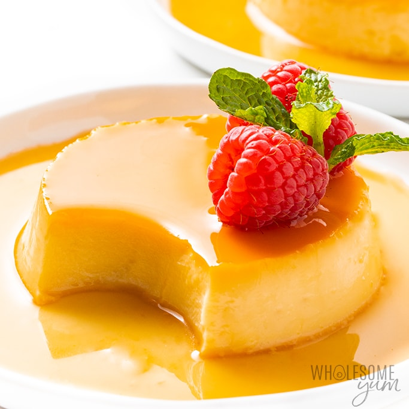

Recipe: Flan keto

This Keto flan, also known as crème caramel, is a lovely low carb dessert with
only 4g net carbs per serving. It's easy to make and tasty to eat.
Today I’m going to show you how to make Keto flan, a ridiculously delicious
Latin American dessert. It’s a rich, sweet custard topped with an even
sweeter caramel sauce. Flan is creamy, dreamy, and very very tasty.
Ingredients
- 200 ml heavy whipping cream
- 4 egg
- 100 ml vegetable milk
- 20 gr erithritol or stevia
- 1 pinch of salt
- Vanilla optional
Steps
- Preheat the oven to 325 degrees.
- Pour sugar free caramel syrup into a loaf pan, ramekin or small
cake pan. Tilt the pans slightly to evenly coat the bottom of
the pan. Set aside.
- Add eggs and egg yolk to a blender and blend until smooth.
- Add nut milk, heavy cream, sweetener, lemon zest and vanilla
extract and blend until smooth.
- Pour custard mixture into prepared loaf pan or cake pan.
- Bake at 325 degrees for 60 to 75 minutes or until the flan is
set on top but lightly jiggly. Remove from the oven and the
water bath. Place on a cooling rack for 30 minutes. Then
transfer to the refrigerator to set for at least 8 hours.
- Loosen the flan from the sides of the loaf pan using a knife
to unmold. Center your serving dish on top of the pan and
carefully flip the pan and plate together. The flan should
fall onto the plate and the caramel will run all over the top
of the flan. (If the flan does not come out, flip it back over
and let set at room temperature for 5-10 minutes or place the
the cake pan in a hot water bath for a few minutes to melt the
caramel. Then flip again to loosen).